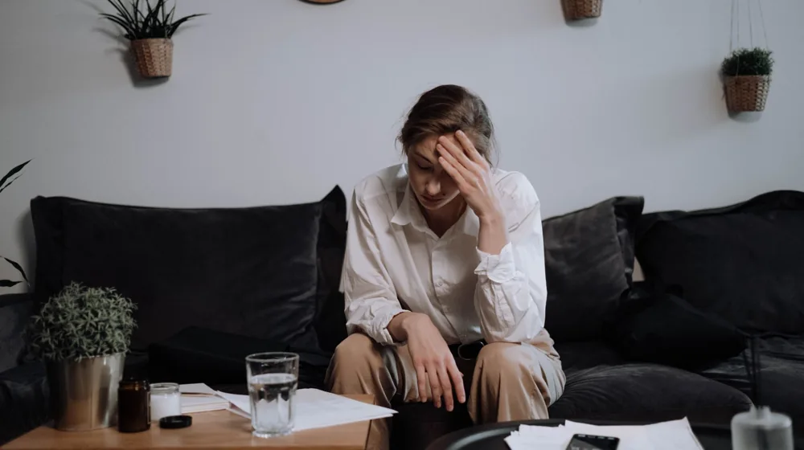

번아웃, 혹시 나도? 놓치면 후회할 자가진단 체크리스트 5가지 증상
사진: Nataliya Vaitkevich / Pexels (무료 이미지, 출처 표기)
번아웃 증후군, 왜 알아야 할까요?

번아웃 증후군(Burnout Syndrome)은 과도한 업무나 스트레스로 인해 신체적, 정신적 에너지가 고갈되는 상태를 말합니다. 세계보건기구(WHO)는 2019년 국제질병분류(ICD-11)에 '성공적으로 관리되지 않은 만성적인 직업 관련 스트레스로 인한 증후군'으로 등재하며 그 중요성을 강조했습니다.
이는 단순히 피곤한 것을 넘어, 무기력감, 업무 효율 저하, 대인관계 문제 등 전반적인 삶의 질을 크게 떨어뜨릴 수 있습니다. 조기에 자신의 상태를 알아차리고 적절히 대처하는 것이 중요한 이유입니다.
번아웃 자가진단 체크리스트: 주요 증상 확인하기
아래 체크리스트를 통해 최근 자신의 상태를 객관적으로 점검해 볼 수 있습니다. 각 항목에 대해 '전혀 그렇지 않다(0점)'부터 '매우 그렇다(4점)'까지 점수를 매겨보세요.
점수 해석:
0-8점: 비교적 양호한 상태입니다.
9-16점: 번아웃 초기 증상을 의심해 볼 수 있습니다. 생활 습관 개선을 고려해 보세요.
17점 이상: 번아웃 가능성이 높으니 전문가와의 상담을 적극적으로 고려해 보시길 권장합니다.
이 자가진단은 참고용 자료이며, 정확한 진단과 치료는 정신건강의학과 전문의 또는 심리 상담사와 상담하는 것이 가장 중요합니다. (2024년 5월 기준)
번아웃을 부르는 주된 원인들
번아웃은 다양한 복합적인 요인으로 인해 발생합니다. 주로 다음과 같은 상황들이 번아웃을 유발하는 주요 원인으로 꼽힙니다.
- 과도한 업무량 및 책임감: 끊임없이 주어지는 업무와 높은 기대치는 신체적, 정신적 소진을 가속화합니다.
- 불균형한 워라밸: 일과 삶의 균형이 깨져 휴식과 재충전의 시간이 부족할 때 번아웃에 취약해집니다.
- 명확하지 않은 역할: 업무 책임과 역할이 불분명할 때 오는 혼란과 스트레스도 중요한 원인입니다.
- 통제 불능감: 자신의 업무나 일정에 대한 통제권이 없다고 느낄 때 무기력감이 커질 수 있습니다.
- 낮은 보상과 인정: 노력에 비해 보상이나 인정이 부족하다고 느낄 때 좌절감과 함께 번아웃이 올 수 있습니다.
번아웃 극복을 위한 실질적인 방법
번아웃은 효과적인 대처를 통해 극복하고 예방할 수 있습니다. 다음 방법들을 꾸준히 실천하여 건강한 일상을 되찾아 보세요.
- 충분한 휴식: 의식적으로 일에서 벗어나 몸과 마음을 쉬게 하는 시간을 가져야 합니다. 규칙적인 수면 습관과 짧은 낮잠도 도움이 됩니다.
- 건강한 생활 습관: 균형 잡힌 식단과 규칙적인 운동은 신체 에너지를 회복하고 스트레스 해소에 긍정적인 영향을 줍니다.
- 취미 활동 및 몰입: 업무 외적인 활동을 통해 성취감과 즐거움을 느끼는 시간을 마련하세요. 명상, 독서, 운동, 여행 등 자신에게 맞는 활동을 찾는 것이 중요합니다.
- 감정 표현 및 소통: 신뢰할 수 있는 친구, 가족 또는 동료와 자신의 감정을 솔직하게 나누는 것이 중요합니다. 때로는 이야기를 들어주는 것만으로도 큰 위안이 됩니다.
- 업무 조절 및 우선순위 설정: 현실적인 목표를 설정하고, 중요한 일부터 처리하며 불필요한 완벽주의를 내려놓는 연습이 필요합니다. '아니오'라고 말할 줄 아는 것도 중요합니다.
전문가의 도움이 필요할 때
자가진단 체크리스트 점수가 높거나, 위에 제시된 극복 방법들을 꾸준히 시도했음에도 불구하고 증상이 호전되지 않고 일상생활에 지장을 준다면 전문가의 도움을 받는 것이 좋습니다.
정신건강의학과 전문의나 숙련된 심리 상담사는 개인의 상태에 맞는 정확한 진단과 효과적인 치료 계획을 제시해 줄 수 있습니다. 전문적인 도움을 요청하는 것은 결코 약점이 아니라, 건강한 삶을 위한 현명하고 용기 있는 선택입니다.
🔗 이 글도 함께 보면 좋아요: 성공적인 캠핑장 예약의 모든 것: 명당 잡는 꿀팁 5가지
관련 추천 상품
이 포스팅은 쿠팡 파트너스 활동의 일환으로, 이에 따른 일정액의 수수료를 제공받습니다.